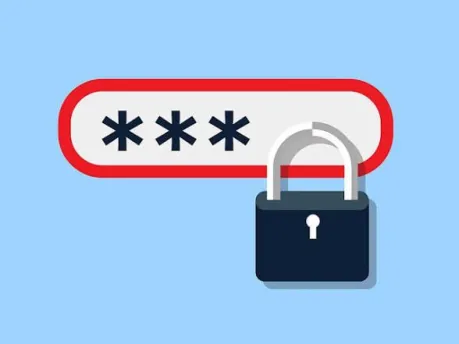

| TIPO | DESCRIPCION |
|---|---|
| Phishing | Se utilizan correos electrónicos falsos que imitan a instituciones o empresas conocidas. |
| Smishing | Utiliza mensajes de texto SMS para engañar a los usuarios y conseguir información privada. |
| Vishing | Consiste en realizar llamadas telefónicas haciéndose pasar por representantes de empresas o instituciones. |
| Baiting | Consiste en utilizar falsas recompensas, regalos u ofertas para despertar el interés de las personas. |
| Pretexting | El delincuente inventa una identidad o situación para obtener información mediante engaños. |
| Spear Phishing | Es un ataque personalizado dirigido a una persona o grupo específico utilizando información sobre sus intereses o actividades. |
| Asunto: ¡Tu cuenta será suspendida! Estimado usuario: Hemos detectado un problema con tu cuenta. Debes verificar tus datos inmediatamente para evitar su bloqueo. Verifica tu cuenta ahora |